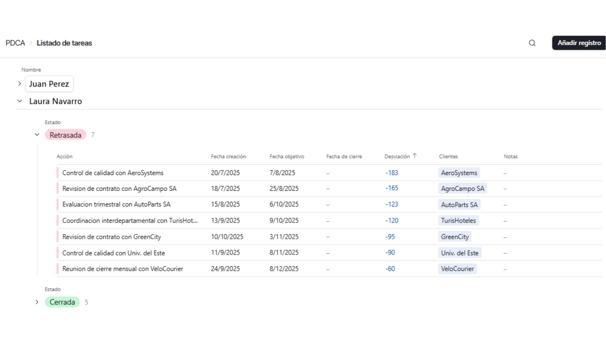
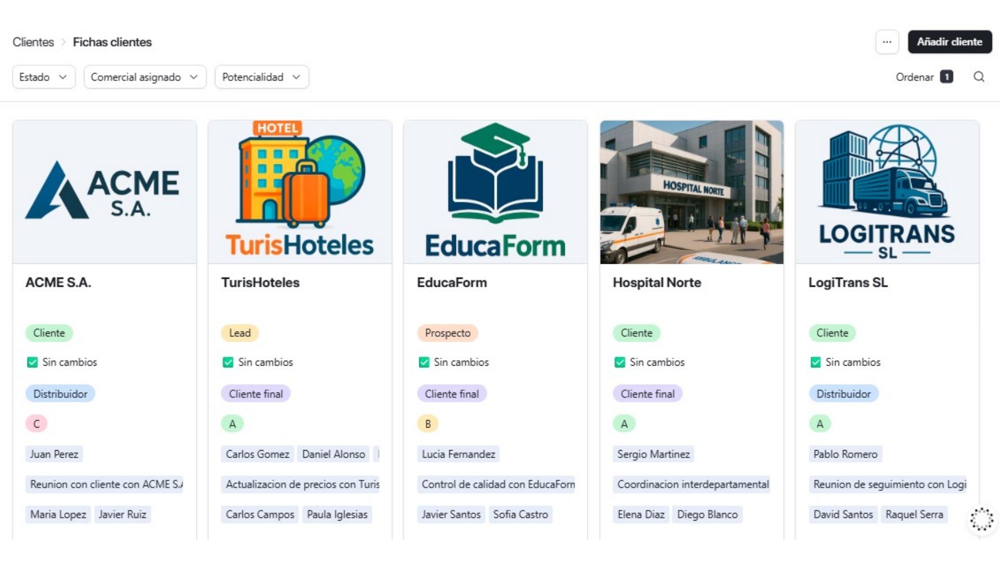
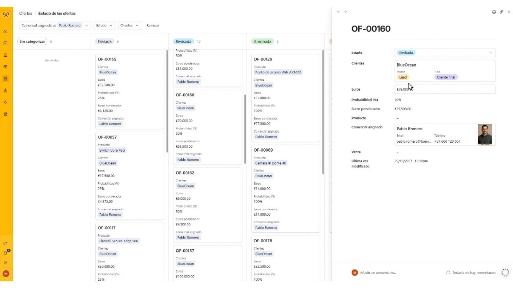
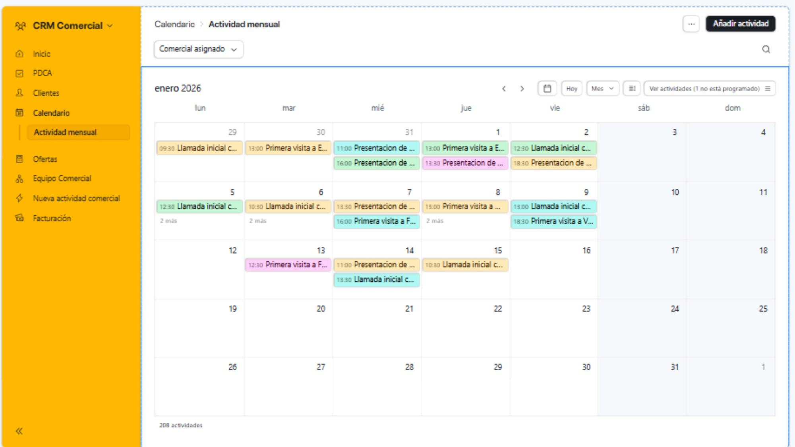
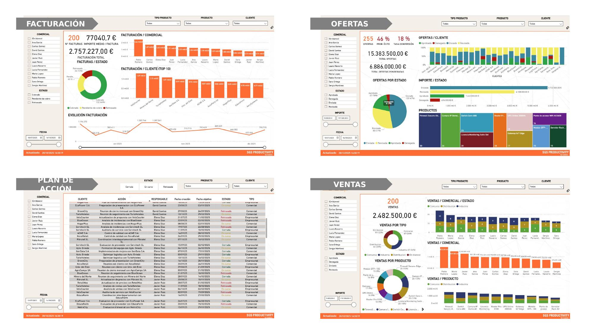

CRM Airtable
Solución CRM lista para arrancar, adaptada al proceso comercial real de tu empresa. Gestión centralizada de clientes, pipeline visual, actividad comercial, asistente IA y reporting en Power BI — todo en un único entorno.
Explorar la interfaz
Funcionalidades Clave

Seguimiento centralizado de tareas
Vista unificada de todas las acciones comerciales asignadas a cada miembro del equipo. Prioriza tareas, registra el avance y detecta de un vistazo qué acciones llevan retraso antes de que se conviertan en un problema.
- Listado agrupado por comercial con fechas de creación, objetivo y cierre
- Indicador de desviación en días: identifica retrasos al instante
- Estados diferenciados: Retrasada y Cerrada con contadores por grupo
- Vinculación directa con clientes y edición inline sin abrir fichas

Ficha completa de cada cliente
Centraliza toda la información de tus cuentas en un único lugar. Accede al estado, la potencialidad, el historial de actividad, las oportunidades abiertas y los contactos clave desde una sola ficha, sin cambiar de herramienta.
- Vista galería con logo, estado (Prospecto / Lead / Cliente) y potencialidad A, B o C
- Múltiples vistas: galería, Kanban por estado, por comercial, sin asignar
- Filtros rápidos por estado, comercial asignado y potencialidad
- Historial completo de actividad comercial y ventas vinculadas por cliente

Pipeline visual por etapas
Visualiza el estado de todas las oportunidades en un tablero Kanban interactivo. Identifica cuellos de botella, controla el forecast con euros ponderados y toma decisiones con visibilidad real del embudo de ventas.
- Columnas por estado: Sin categorizar, Enviada, Revisada, Aprobada, Denegada
- Euros ponderados calculados automáticamente (importe × probabilidad de cierre)
- Filtrado por comercial, estado y cliente; ordenación por importe o código
- Ficha de oferta con producto, comercial asignado y venta generada si fue aprobada

Planificación y seguimiento de actividad
Calendario comercial integrado para planificar y registrar visitas, llamadas y presentaciones. Controla la actividad de cada comercial en una vista mensual o semanal y mantén el seguimiento consistente de clientes y oportunidades.
- Vista mensual, semanal, bisemanal o diaria — configurable al instante
- Tipos de actividad: 1er Contacto, 1ª Visita, Presentación de Oferta
- Filtro por comercial asignado para ver sólo la agenda propia
- Registro de oferta vinculada y estado de ejecución (Ejecutada / Plan)
Visión 360° de cada comercial
Accede a la ficha completa de cada miembro del equipo de ventas: sus clientes asignados, el estado de cada cuenta, las personas de contacto y todas las acciones del PDCA que tiene pendientes o cerradas.
- Listado de empleados con foto, email y teléfono
- Cartera de clientes por comercial con potencialidad, estado y tipo
- Acciones del PDCA vinculadas: retrasadas y cerradas con desviación en días
- Acceso rápido desde el panel de inicio para preparar visitas
Control del estado de cobro
Consulta en tiempo real qué facturas están cobradas, cuáles están pendientes y cuáles en situación de retraso. Agrupadas por cliente y estado, con trazabilidad directa a la oferta de origen y al comercial responsable.
- Vista agrupada por cliente y estado: Cobrado y Retrasado
- Campos clave: nº factura, importe con IVA, fecha emisión y fecha de cobro
- Vinculación directa con la oferta de origen y el comercial modificador
- Filtros por cliente y estado; ordenación por fecha, importe o referencia
Inteligencia artificial integrada
Interactúa con tu CRM en lenguaje natural. Crea clientes, actualiza estados, busca información y genera resúmenes comerciales sin salir de la conversación — la IA actúa directamente sobre los datos en tiempo real.
- Creación de fichas de clientes por instrucción de texto o voz
- Consultas sobre ofertas, clientes y actividad sin necesidad de filtros
- Modo Ask, Recommended y Analyze según el tipo de consulta
- Disponible en escritorio y en la app móvil de Airtable

Reporting ejecutivo en tiempo real
Dashboards conectados directamente al CRM con visión ejecutiva de la actividad comercial. Cuatro paneles independientes para Facturación, Ofertas, Plan de Acción y Ventas — listos para presentar a dirección sin preparación adicional.
- Panel de Facturación: importe, evolución, top 10 clientes y estado de cobro
- Panel de Ofertas: forecast con euros ponderados, tasa de conversión y ranking de productos
- Panel de Ventas: desglose por segmento (Concurso, Distribución, Industrial) y comercial
- Filtros cruzados por fecha, cliente, producto y comercial en todos los paneles